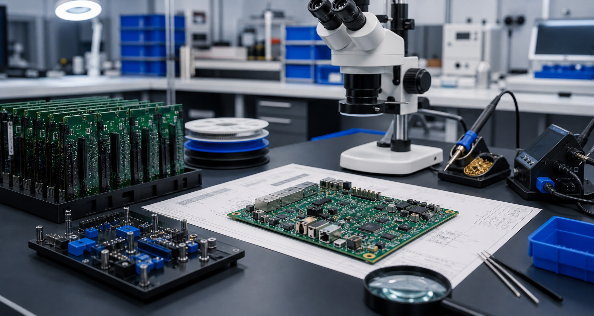

Practical Engineering
Decisions are anchored in buildability, test behavior, and revision control rather than pitch language.
Eonix Systems exists for projects where electronics, firmware, validation, and manufacturing cannot be treated as disconnected stages.

Many hardware projects do not break because one engineer lacked effort. They break because circuit design, firmware, bring-up, assembly, and documentation were treated as separate jobs with weak handoff between them.
Eonix Systems was built to connect that chain. The work stays grounded in the actual board, the actual interface behavior, the actual prototype issues, and the files needed to hand the system to manufacturing or the next engineer.
This is not presentation-first engineering. It is work aimed at boards that can be assembled, firmware that can be debugged, and outputs that can survive the next revision cycle.
Every service is shaped around one requirement: the next engineer should be able to build, test, review, or manufacture what was produced without guessing the intent.
Decisions are anchored in buildability, test behavior, and revision control rather than pitch language.
The board and the device software are developed with the same debug path and electrical constraints in view.
Outputs are structured for assembly, inspection, vendor use, and stable revision history.
Design notes, validation outputs, and handover material are written so another engineer can continue the work cleanly.
Control electronics, power handling, sensor integration, and field revision support.
Controllers, interface boards, monitoring electronics, and dependable documentation.
Connected boards, low-power designs, telemetry paths, and firmware integration.
Careful electronics development support where validation and technical handover matter.
Instrumentation boards, experiment electronics, and fast iteration cycles.
Board design, firmware, bring-up, and manufacturing preparation for custom device programs.
Rishabh Jain | Founder | Electronics Engineer
Eonix Systems is led by Rishabh Jain with a focus on embedded electronics, PCB design, firmware integration, and prototype validation. The company direction comes from hands-on engineering work rather than agency or startup positioning.
The emphasis stays on usable deliverables: board files, firmware behavior, validation results, and manufacturing-aware outputs that move the hardware forward.
Schematics, prototype photos, debug notes, or a product brief are enough to start a technical review.